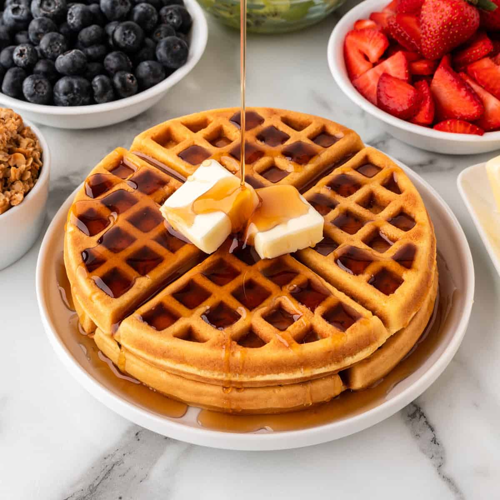

Waffles
Los waffles son un postre delicioso y versátil que se caracteriza por su textura crujiente por fuera y suave por dentro, además de su distintivo patrón de rejilla. Se elaboran con una masa o pasta leudada que se cocina entre dos placas calientes de una plancha para waffles, lo que les da su forma, tamaño y superficie característica.
Características:
Textura: La combinación de un exterior dorado y crujiente con un interior tierno y a menudo ligeramente esponjoso es una de las señas de identidad del waffle.
Sabor: El sabor base suele ser ligeramente dulce y similar al de un panqueque, pero puede variar según la receta (algunos incluyen vainilla, canela u otros aromatizantes).
Forma: Tradicionalmente tienen una forma de rejilla o panal, creada por las placas de la plancha para waffles. Sin embargo, existen planchas con diversas formas (corazones, personajes, etc.).
Versatilidad: Los waffles son increíblemente versátiles y se pueden disfrutar con una gran variedad de acompañamientos dulces y salados.
Ingredientes
- 150 gr de harina
- 2 huevos
- 25 gr de azúcar
- 180 ml de leche
- 85 gr de mantequilla derretida
- 8 gr polvo de hornear
- Esencia de vainilla
- Pizca de sal

Preparación
- Mezclar los ingredientes en un tazón comenzando con los ingredientes húmedos
- Luego incorpora los secos: harina, azúcar, polvo de hornear y sal.
- Una vez obtengamos una mezcla homogénea y uniforme, lo siguiente es verterla sobre la wafflera o sanduchera
- En unos 5 minutos aproximadamente los Waffles van a estar listos.
